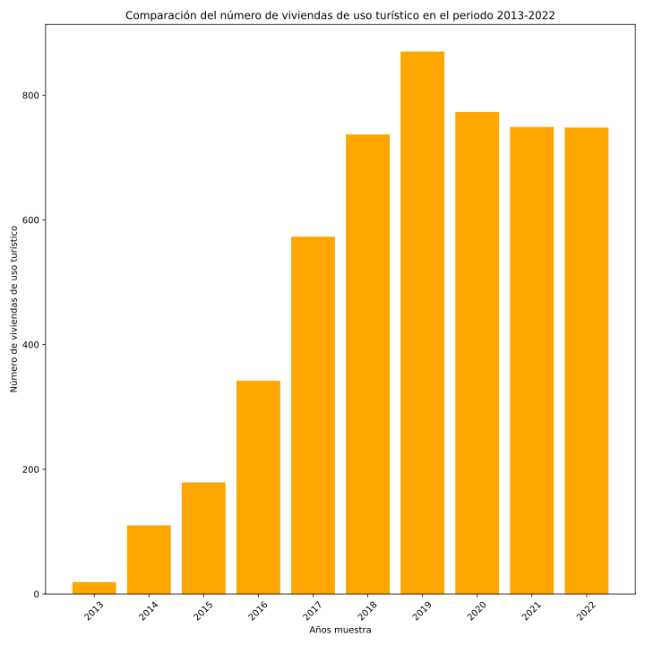
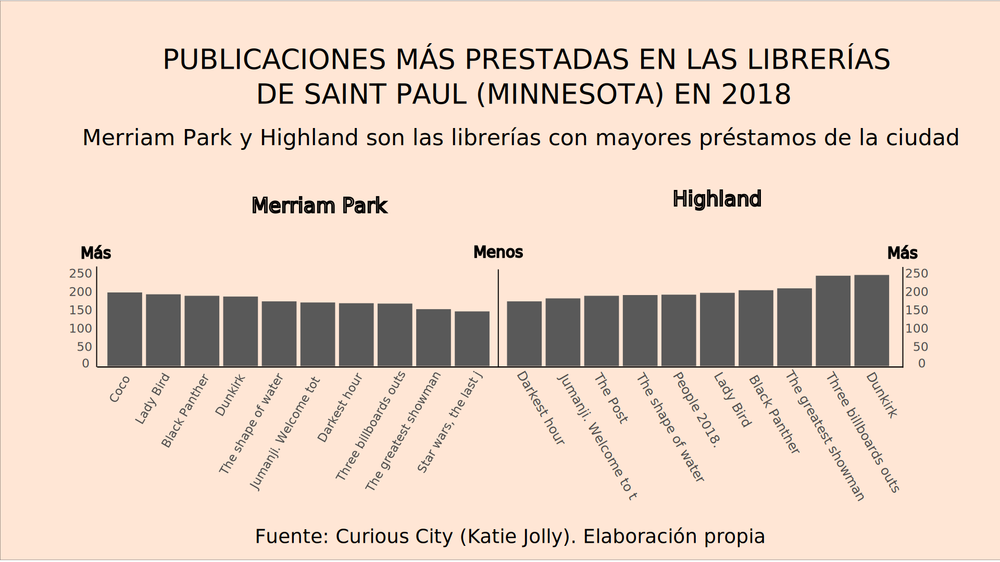

Infografías
Gráficos, mapas e infografías realizadas con diferentes técnicas y programas.
Gráficos interactivos con Plotly (Python)
Gráfico interactivo con Datawrapper
Gráfico con Matplotlib (Python)
Infografías Illustrator/Inkscape

Gráficos, mapas e infografías realizadas con diferentes técnicas y programas.